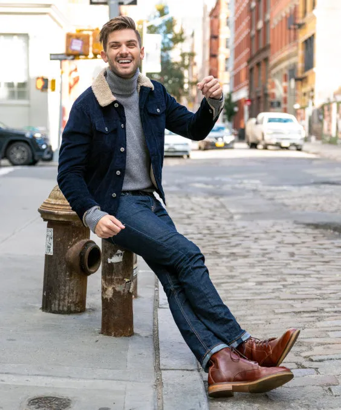
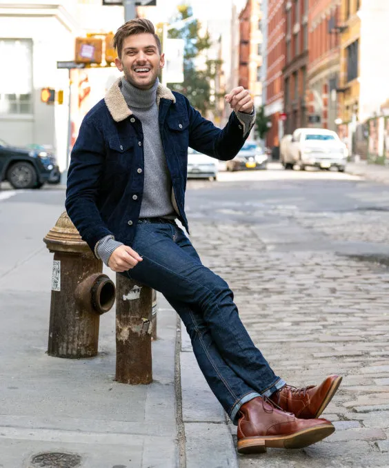

tendências de verão
como se vestir para moda de verão?
Para as mulheres é recomendado se vestir utilizando cores como azul, amarelo, verde e rosa. Em relação as roupas procurem usar:
- Calças largas
- Vestidos com estampas florais
- Mangas bufantes
- Peças de crochê
- sandália flatform
- Rasteirinha
No caso dos homens a tendência é utilizar roupas com cores beges, brancas ou coloridas, e os looks utilizados são:
- Camisas com estampa florida
- Bermudas
- Sandálias de couro
- Camisa pima cottom
Moda de inverno
As tendências de inverno para as mulheres são roupas com cores terrosas, escuras, brancas ou com tons cáqui, tambêm utiliza-se calçados como bota e salto alto. Os looks mais utilizados são:
- Sobretudo
- Jaqueta de couro
- Roupas com franja
- Blusa em tricot
Já as tendências de inverno para os homens são roupas utilizando cores claras como cinza, branco, ou outras como azul. o que é mais utilizado para a moda masculina no inverno é:
- Suéter
- Sobretudo
- Moletom
- Blazer
- Bota
.png) 
